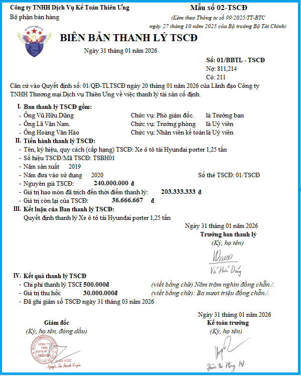

Biên bản thanh lý TSCĐ là chứng từ kế toán dùng để xác nhận việc thanh lý TSCĐ và làm căn cứ để ghi giảm TSCĐ trên sổ kế toán.
Mẫu biên bản thanh lý mới nhất năm 2026 là Mẫu số 02 - TSCĐ được ban hành kèm theo Thông tư số 99/2025/TT-BTC có hiệu từ ngày 01/01/2026 và áp dụng cho năm tài chính bắt đầu từ hoặc sau ngày 01/01/2026 (Thay thế Mẫu số 01 - TSCĐ Thông tư 200)
1. Mẫu biên bản thanh lý TSCĐ theo Thông tư 99
BIÊN BẢN THANH LÝ TSCĐ
Ngày 15 tháng 09 năm 2026
Số: …………………
Nợ: ………………… Có: ………………… Căn cứ Quyết định số: ……………. ngày 15 tháng 09 năm 2026 của ................................……………… về việc thanh lý tài sản cố định. I. Ban thanh lý TSCĐ gồm: Ông/Bà: ………… Chức vụ ……….…. Đại diện ………………Trưởng ban Ông/Bà: ………… Chức vụ ………….. Đại diện ……………… Ủy viên Ông/Bà: ………… Chức vụ ………...... Đại diện ……………… Ủy viên II. Tiến hành thanh lý TSCĐ: - Tên, ký mã hiệu, qui cách (cấp hạng) TSCĐ ............................................... - Số hiệu TSCĐ/Mã TSCĐ ..................................................................... - Năm sản xuất ..................................................................................... - Năm đưa vào sử dụng …………………. Số thẻ TSCĐ .......................... - Nguyên giá TSCĐ .................................................................................. - Giá trị hao mòn đã trích đến thời điểm thanh lý .......................................... - Giá trị còn lại của TSCĐ ................................................................................. III. Kết luận của Ban thanh lý TSCĐ: ......................................................................................................................... .........................................................................................................................
- Chi phí thanh lý TSCĐ : …………. (viết bằng chữ) ......................................... - Giá trị thu hồi: …………………..(viết bằng chữ) ........................................... - Đã ghi giảm sổ TSCĐ ngày tháng năm
|
Ghi chú: Tùy theo đặc điểm hoạt động sản xuất kinh doanh và yêu cầu quản lý của đơn vị mình, doanh nghiệp được xây dựng, thiết kế biểu mẫu chứng từ kế toán
2. Mẫu biên bản thanh lý TSCĐ trên Excel:

3. Cách lập biên bản thanh lý TSCĐ theo Thông tư 99/2025/TT-BTC
Góc trên bên trái của Biên bản thanh lý TSCĐ ghi rõ tên đơn vị (hoặc đóng dấu đơn vị), bộ phận sử dụng. Khi có quyết định về việc thanh lý TSCĐ doanh nghiệp phải thành lập Ban thanh lý TSCĐ. Thành viên Ban thanh lý TSCĐ được ghi chép ở Mục I.
Ở Mục II ghi các chỉ tiêu chung về TSCĐ có quyết định thanh lý như:
- Tên, ký hiệu TSCĐ, số hiệu hoặc Mã TSCĐ, số thẻ TSCĐ, nước sản xuất, năm đưa vào sử dụng.
- Nguyên giá TSCĐ, giá trị hao mòn đã trích cộng dồn đến thời điểm thanh lý, giá trị còn lại của TSCĐ đó.
Mục III ghi kết luận của Ban thanh lý, ghi ý kiến nhận xét của Ban về việc thanh lý TSCĐ.
Mục IV, kết quả thanh lý: Sau khi thanh lý xong căn cứ vào chứng từ tính toán tổng số chi phí thanh lý thực tế và giá trị thu hồi ghi vào dòng chi phí thanh lý và giá trị thu hồi (giá trị phụ tùng, phế liệu thu hồi tính theo giá thực tế đã bán hoặc giá bán ước tính).
Biên bản thanh lý phải do Ban thanh lý TSCĐ lập và có đầy đủ chữ ký, ghi rõ họ tên của trưởng Ban thanh lý, kế toán trưởng và giám đốc doanh nghiệp.
--------------------------------------------
Các bạn muốn tải (download) Mẫu biên bản thanh lý TSCĐ bằng file Word hoặc trên file Excel theo Thông tư 99/2025/TT-BTC về để tham khảo và sử dụng thì có thể gửi mail về địa chỉ mail: ketoandieutam@gmail.com => Kế Toán Diệu Tâm sẽ gửi lại Mẫu biên bản thanh lý TSCĐ theo Thông tư 99/2025/TT-BTC bằng file Word hoặc file Excel này cho các bạn
--------------------------------------------